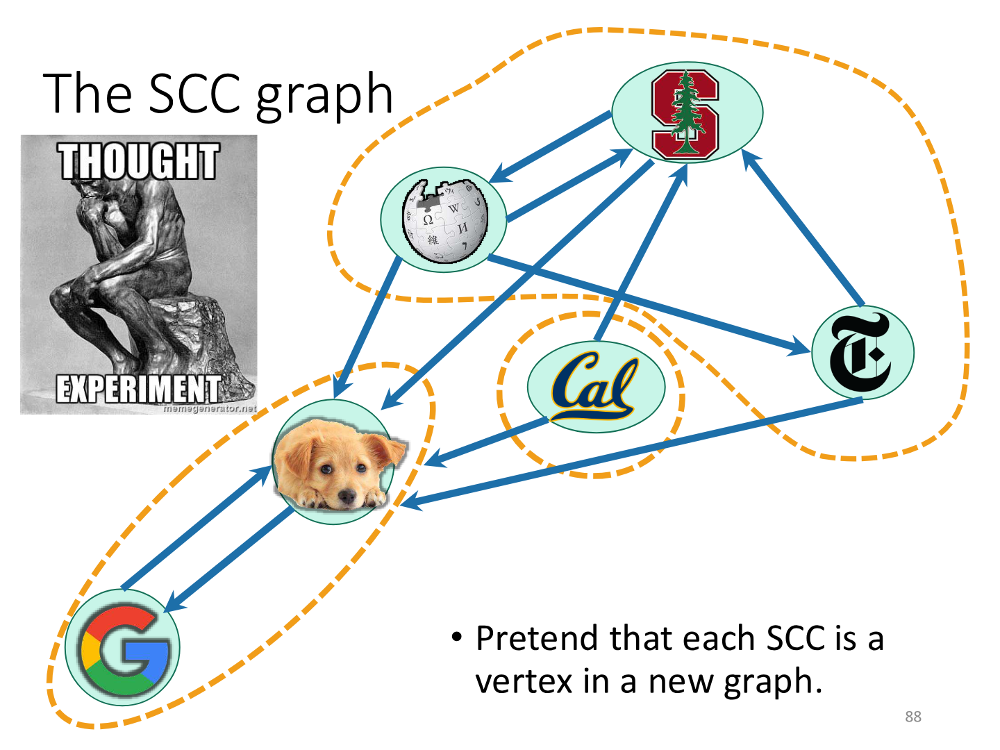
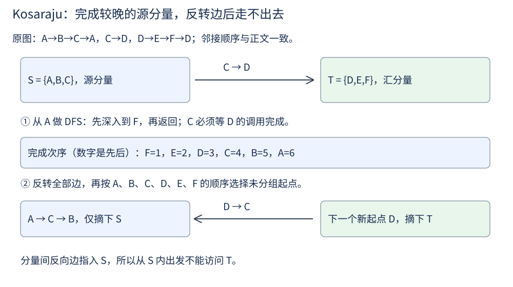
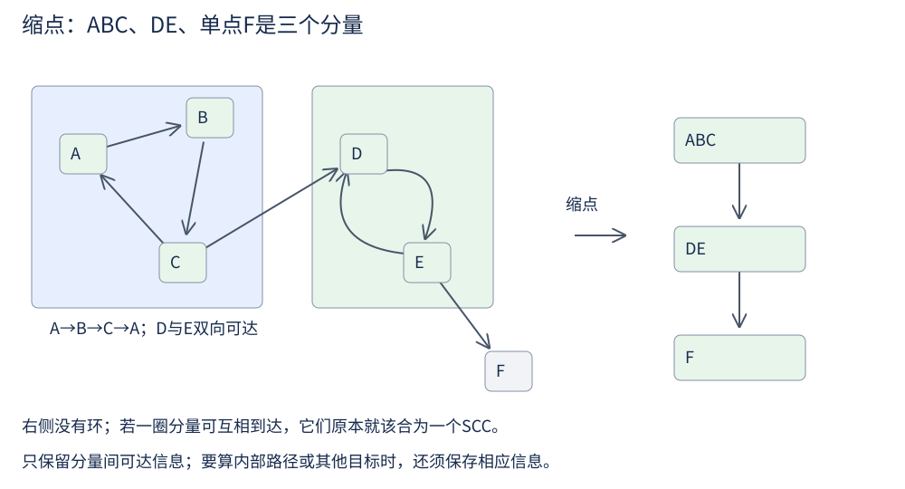

第 16 讲 · 强连通分量¶
阅读起点：第 15 讲：有向可达、DFS 完成顺序、DAG。
首读范围：先做两个环的例子与两次 DFS；Tarjan 和 2-SAT 选读。
先想三个问题：在一张有向图上从某个顶点出发做 DFS，会走到哪些点？换一个起点呢？如果想把所有顶点分成若干个“内部互相可达、外部无法再并入”的簇，用 DFS 能不能做到？
前两问的答案完全不同——在一般的图里，"从谁出发"会显著影响 DFS 看到的东西。 这正好引出这一讲的主题。
有向图的"连通"要拆成两种¶
在无向图里，"连通"是对称的：A 能走到 B 等价于 B 能走到 A，所以从任意一个顶点出发做一次搜索就能找出整个连通分量。
有向图里"能到达"不再对称：A → B 存在不代表 B → A 存在。于是
- 弱连通：把有向边当成无向边之后图是连通的；
- 强连通：任意两点互相可达。
强连通分量（SCC）就是极大的强连通子集。"极大"意味着不能再把外面的顶点加进来还保持强连通。
为什么关心它¶

橙色虚线圈分别圈出互相可达的网页，蓝箭头是网页链接。每圈缩成一点后，跨圈箭头构成 DAG。先看各圈能否互相到达，再看为什么有跨圈单向边仍不必合并。
因为把每个 SCC 缩成一个点之后，得到的图一定是 DAG。
为什么？如果缩点后还有环，环上的所有 SCC 互相可达，它们本该合并成一个更大的 SCC，与"极大"矛盾。
这条性质是 SCC 全部价值的来源：它把有环的有向图变成无环的 DAG，而无环图上的问题（拓扑排序、DP、路径计数）都好办得多。 编译器检测循环依赖、2-SAT 判定可满足性、把"互相依赖的模块"归成一组，用的都是这个思路。
（顺便说一句：写完 SCC 之后可以用这条性质自检——缩点后如果有环，算法一定实现错了。）
一个笨办法：每个顶点各搜一次¶
先约定程序接口：n 个顶点编号为 0..n−1，graph[u] 列出 u 的出邻居；即使某个点没有出边，也要有空列表。返回 comp 和 cid：comp[u] 是顶点 u 所属的分量编号，cid 是分量总数。同组节点编号相同即可，具体用 0 还是 1 命名不影响分组。
例如边为 0→1、1→0、1→2，0 和 1 互相可达，2 却回不到它们，因此可返回 comp=[0,0,1]、cid=2。单个顶点也可以构成一个分量：从自己到自己允许走 0 条边。
对每个顶点做一次 DFS，看它和哪些顶点互相可达：
def scc_naive(n, graph):
reach = []
for s in range(n): # 从每个点做一遍 DFS
seen, stack = {s}, [s]
while stack:
u = stack.pop()
for v in graph[u]:
if v not in seen:
seen.add(v)
stack.append(v)
reach.append(seen)
comp = [-1] * n
cid = 0
for u in range(n):
if comp[u] != -1:
continue
for v in range(n):
if v in reach[u] and u in reach[v]:
comp[v] = cid
cid += 1
return comp, cid
这里用 n 表示顶点数、m 表示边数。正确，但代价是 O(n(n+m))。 瓶颈在于：为了知道"谁和谁互相可达"，我们做了 n 次独立的搜索，而其中的信息大量重复。
Kosaraju 的两条观察¶
换个角度。因为缩点后是 DAG，这个 DAG 里一定有源点 SCC（没有来自其他 SCC 的入边）和汇点 SCC（没有出边通向别的 SCC）。
观察一：从汇点 SCC 里的任意顶点出发做 DFS，这次 DFS 恰好只会访问该 SCC 内的顶点——因为它没有出边通向别的 SCC。
这一条意味着：只要我能先找到一个汇点 SCC，就能用一次 DFS 把它整块摘下来，然后对剩下的图重复。
观察二：怎么找？第一次 DFS 的完成顺序里，最后完成的顶点属于源点 SCC（最上游那块）。而在转置图（把所有边反向）里，源点 SCC 变成了汇点 SCC。
把两条合起来，就是 Kosaraju 算法：
为什么"逆序"是对的¶
先只看两个不同分量之间的一条边 S→T。令 finish(S) 为 S 中最后一个顶点的完成时间。要证 finish(S)>finish(T)，分两种情况：
- 若先发现 S，DFS 能沿分量内部的路径再经这条边到达整个 T。T 没有路径回到 S（否则该合并），因此 T 会在 S 的首个调用返回前完成。
- 若先发现 T，T 不能到达 S，因此 T 整块完成后，才会在别处发现 S。
所以原图中每条分量边都从“完成较晚”指向“完成较早”。最大完成时间所在的分量不可能有其他分量的入边，因此它是源点。源点与汇点可以重合，例如孤立的分量既没有入边也没有出边。反转边后，它成为走不出去的汇点，第二次 DFS 正好摘下这一整块。之后只访问尚未分组的顶点，同样的论证逐块成立。

读图先看原图的两个分量框与跨框箭头，再看边反转后为何从 A 走不到 D。颜色表示分量，数字表示第一次 DFS 的完成次序；不是节点的值。
from collections import defaultdict
def kosaraju(n, edges):
graph, rgraph = defaultdict(list), defaultdict(list)
for u, v in edges:
graph[u].append(v)
rgraph[v].append(u)
order, visited = [], [False] * n
def dfs1(u):
visited[u] = True
for v in graph[u]:
if not visited[v]:
dfs1(v)
order.append(u) # 后序
for s in range(n):
if not visited[s]:
dfs1(s)
comp, cid = [-1] * n, 0
def dfs2(u):
comp[u] = cid
for v in rgraph[u]:
if comp[v] == -1:
dfs2(v)
for s in reversed(order): # 逆后序
if comp[s] == -1:
dfs2(s)
cid += 1
return comp, cid
递归版最好写，但链状图上递归深度是 O(|V|)，大图要改成显式栈。面试里写递归版完全可以，只要能说明递归深度的问题。
缩点¶

此处换成ABC、DE、单点F三个分量，用来展示缩点；前面两遍DFS的例子是ABC、DEF两组，不能沿用那份comp数组。图中所有方向都由可见箭头标明。
def condense(edges, comp):
dag = {c: set() for c in comp} # 包含没有跨分量出边的分量
for u, v in edges:
if comp[u] != comp[v]:
dag[comp[u]].add(comp[v]) # 用 set 去重
return dag
这里 {c:set() for c in comp} 是字典推导式：逐个读取分量编号 c，以 c 为键、一个新空集合为值；重复编号仍对应同一个键。也可先建空字典，再循环执行 dag[c]=set()。返回字典包含全部分量编号，汇分量与孤立分量也保留空邻接集合。集合会去掉多条指向同一分量的边；若后续要统计原图边数或容量，不能去重后丢掉这些信息。
复杂度¶
建图、两次 DFS 都是 Θ(|V| + |E|)，所以总计 Θ(|V| + |E|)。对比暴力算法的 O(n(n+m))，这就是本讲的直接价值。
走一遍¶
考虑两个用单向边连起来的强连通块：
约定边为 A→B, B→C, C→A, C→D, D→E, E→F, F→D，每个邻接表按此顺序访问。从 A 进入 B、C 后，C 还不能完成，因为它还要访问 D：
在转置图从 A 开始：A→C→B，只能走到 {A,B,C}；反向跨块边是 D→C，不能从 C 走到 D。跳过已分组的 B、C 后，从 D 得到 {D,E,F}。
若第二轮仍在原图从 A 搜索，就会把两个分量一并吞掉。这正是反转边的必要性。
另一种做法：Tarjan¶
Tarjan 用一次 DFS 同时记录两个数：dfn[u] 是进入 u 的次序；low[u] 是按下面的规则，从 u 的 DFS 子树可以关联到的最早发现编号。它还维护一个“已发现但尚未归入分量”的栈，该栈与当前递归调用栈不同。
- 遇到未访问的孩子 v，先递归，再用 low[v] 更新 low[u]。
- 遇到已经在分量栈里的 v，用 dfn[v] 更新 low[u]。
- 遇到已经归入某个分量的 v，不再用它更新 low[u]。
初始化 low[u]=dfn[u]。所有出边处理完，若 low[u]=dfn[u]，就从分量栈弹出直到 u，这一段构成一个 SCC。不要把 low 简化成“从 u 任意可达顶点的最小编号”：已完成分量也可能可达，却不应参与更新。首读时先独立写对 Kosaraju，再学习这套更细的栈不变量。
从讲义走到代码¶
模块循环依赖可以先归为一组，再按缩点后的 DAG 安排组间顺序。
先用 Course Schedule（先修复习） 复习有向图判环。然后把 A..F 编号为 0..5，按正文的七条边调用 kosaraju；应有两组 {0,1,2}、{3,4,5}，不要求分量编号等于某个固定数字。
增加一个孤立点应多一个分量；再加 5→0，应把两组并成一组。写两次 DFS 时，第一遍在邻居递归结束后记 order，第二遍反向读 order 并走反向边。
练习¶
1. 无向图的连通分量与有向图的 SCC 有什么不同？
无向图可从未访问点逐次 DFS，每次得到一个连通分量。有向图一次搜索只保证从起点能到达，未必能回来；SCC 要互相可达。因此不能直接照搬无向图“从未访问点搜到的就是一整块”的分组方法。
2. 为什么"缩点之后一定是 DAG"？如果缩点后出现环说明什么？
若缩点后有环 S₁ → S₂ → ⋯ → S_k → S₁，那么 S₁ 中任意顶点能到达 S_k 中顶点，S_k 又能回到 S₁，于是它们的并集整体强连通，与"每个 Sᵢ 极大"矛盾。所以出现环说明实现错了。
3. 为什么第一次 DFS 必须用后序而不是前序？
我们需要的是"哪个 SCC 最上游"，而这个信息体现在完成时间的先后上（源点 SCC 最后完成）。前序记录的是"进入顺序"，反映的是 DFS 从哪开始，无法用来定位源点 SCC。
4. Kosaraju 为什么不能在同一张图上做两次 DFS？
第二次 DFS 按原图源分量的顺序处理；要让一次搜索只摘下一个分量，就要求"该块没有边通向未处理的块"。在原图上，源分量可能有出边通向别处，从它出发就会把其他块也搜进去；转置后它一定没有出边通向其他块，才有逐块摘取的保证。"转置"这个操作正是为了让第二次 DFS 能干净地一块块摘取。
5. 如果图已经是 DAG，SCC 算法会返回什么？
返回 n 个大小为 1 的 SCC。这也说明 SCC 算法可以顺便判环：分量数小于 n 就说明存在至少含两个顶点的 SCC。在本讲无自环的简单图约定下，这可用于判环；允许自环时还要另查单点自环。
6. 用 SCC 判断一个 2-SAT 实例是否可满足。
2-SAT 的输入是一组形如 (a ∨ b) 的条件，问能否给所有变量赋 True/False，使每条条件都成立。∨ 表示“或”，¬ 表示“非”，a、b 各是一个变量或它的否定。例如 (x ∨ y) 要求 x、y 至少一个为真。
把每个布尔变量 x 拆成两个节点 x 与 ¬x；子句 (a ∨ b) 等价于两条蕴含 ¬a → b 与 ¬b → a，把它们建成有向边。该实例不可满足，当且仅当存在某个变量 x 使得 x 与 ¬x 落在同一个 SCC 里。 赋值还需成对处理变量与否定，且方向取决于分量编号的约定；这是选读的下一步，不能直接把任意 SCC 编号当真值。